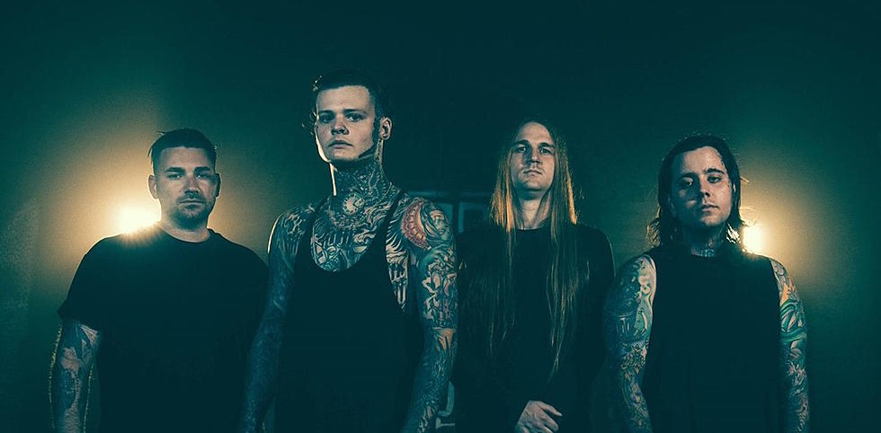
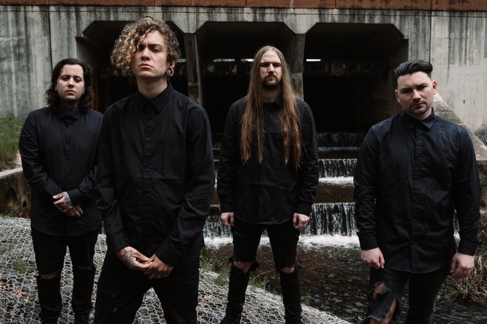
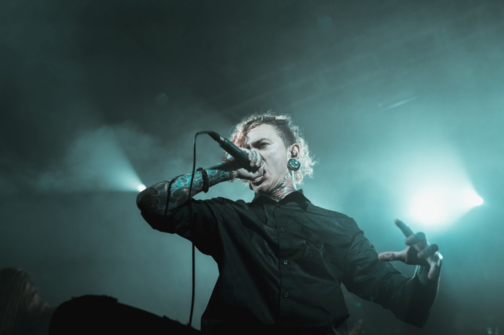
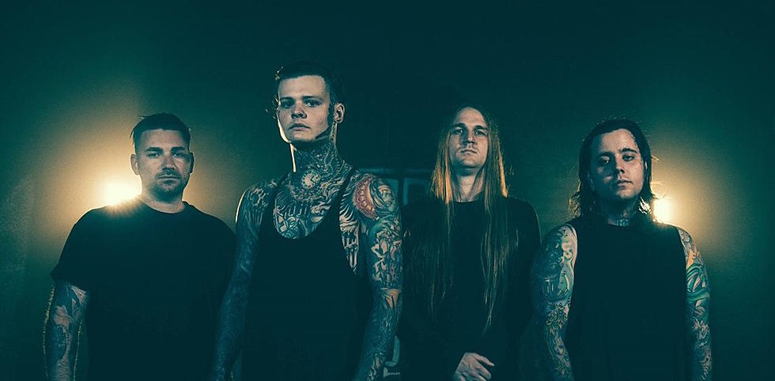
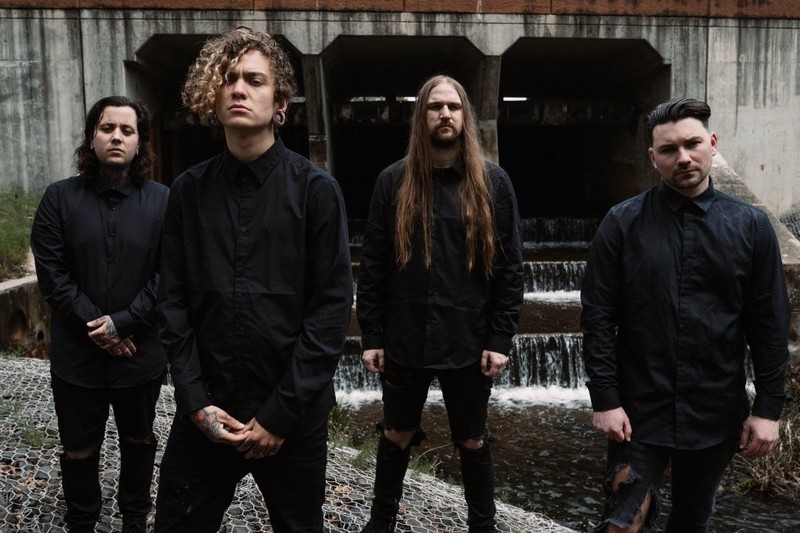
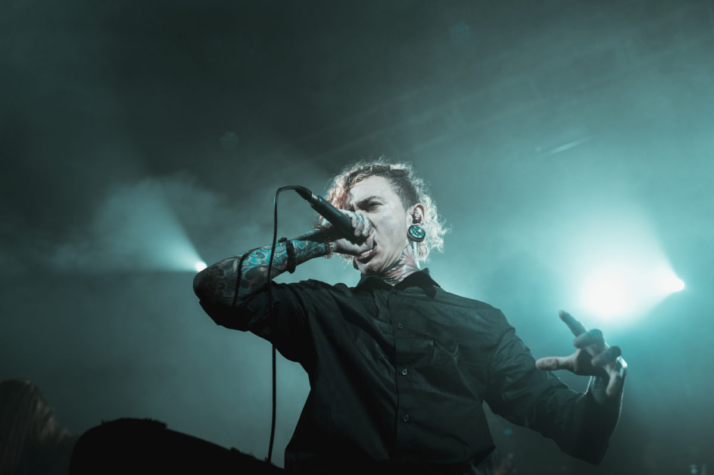

Presentation du groupe
Lorna Shore est un groupe américain de deathcore formé dans le New Jersey en 2009. Le groupe est actuellement composé du guitariste principal Adam De Micco, du batteur Austin Archey, du guitariste rythmique Andrew O'Connor, du vocaliste Will Ramos et du bassiste Michael Yager. Le groupe est surtout connu pour son single de 2021 To the Hellfire. Depuis 2017, il ne reste plus aucun membre original dans le groupe.
Lorna Shore s'est formé au cours du premier trimestre 2009 dans le New Jersey. Le premier EP du groupe intitulé Triumph, sorti en 2010, avait un son metalcore. Le deuxième EP du groupe, Bone Kingdom, est le premier à véhiculer un son deathcore, mais dans un style plus progressif. Maleficium, le troisième EP du groupe, est sorti en décembre 2013. Le clip du single Godmaker est devenu un succès sur YouTube.
Lorna Shore a suivi la sortie de Maleficium en ouvrant la tournée Die Without Hope de Carnifex avec I Declare War, Betraying the Martyrs et Here Comes the Kraken. Depuis, avant la sortie de leur premier album, ils ont tourné avec des groupes tels que The Black Dahlia Murder, Within the Ruins, Archspire, Oceano, Fallujah, Fit for an Autopsy, Rivers of Nihil, Cattle Decapitation, Upon a Burning Body, The Last Ten Seconds of Life et Chelsea Grin. Psalms, leur premier album, est sorti le 9 juin 2015, par l'intermédiaire de Density Records. L'album a été produit par Will Putney, guitariste de Fit for an Autopsy, à The Machine Shop.
 





Discographie
| Nom de l'album | Date de sortie | Type (EP/LP) |
|---|---|---|
| Triumph | 2010 | EP |
| Bone Kingdom | 2012 | EP |
| Maleficium | 2013 | EP |
| Psalms | 2015 | LP |
| Flesh Coffin | 2017 | LP |
| Immortal | 2020 | LP |
| ...And I Return to Nothingness | 2021 | EP |
| Pain Remains | 2022 | LP |